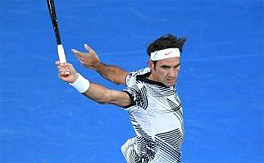
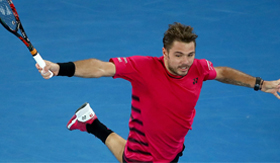
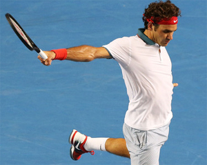
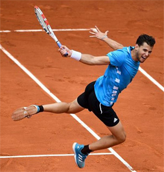

Previous: On Your Mark, Get Set, Go Slow | 🏠 Classic Lessons Home | Next: One-Handed Backhand Completion
One hand backhand
Comprehensive unified tennis knowledge base — Fundamentals, Stroke Analysis, Reference Library, and more
One Hand BackhandSwing Volley
Chris Lewit


Federer and Wawrinka - two players who first popularized the one hand backhand swing volley.
The one-handed backhand is still alive on the pro tour and at all levels of recreational play. While I believe in the technical supremacy of the modern two-handed backhand, the one hander remains a beautiful, graceful, and flowing shot that captures attention. It's still viable in the modern high speed game.
The one-handed backhand swing volley is a “rara avis," or a rare bird, indeed. While legends like Roger Federer and Stan Wawrinka have popularized the shot to some extent—and make it look easy--all the great one-handed backhand players on the pro tour have the ability to rip the ball out of the air.
Federer uses the one hand backswing swing volley as a counterattack and passing shot.
In this article, I will explore some variations that I see on tour with this singular shot and highlight the key technical and tactical aspects that I teach to my students. My goal is to help parents, coaches and players understand the nuances and help players add the swing volley to their arsenal.
Federer, Tsitsipas, Wawrinka, Shapovalov, etc. You name the single-handed player. They are all willing and able to take the ball out of the air. Federer is particularly adept at the shot and uses the swing backhand volley from the midcourt—not only to attack—but also as a counterattacking passing shot.
Classic and Jumping
The classic one handed swing volley is hit on the ground without jumping. But it's also common for players to elevate the body to achieve a better contact point. When the ball is floating high and players are moving forwards, players frequently jump up to attack the ball.
Denis Shapovalov and Dominic Thiem have upgraded the one handed swinging volley adding panache and new technical elements. In particular, they often execute the shot with a powerful jump both for regular groundstrokes and swinging volleys. We can all learn from these innovations.
Shapovalov can hit backhands and backhand swing volleys with a powerful jump.
Technical Points
In terms of the swing itself, the one hand backhand swing volley is similar or identical to the one hand topspin groundstroke. So the player must have that.
But here are the technical points that I prioritize with my one handed backhand students when working on taking balls out of the air. I always teach the classic grounded swing volley first and then progress to the jumping variations.
The base of support, as they say in Spain, is critical for this shot. Players need to run forwards and setup sideways.
I prefer an extreme closed stance for the base of support on a one handed backhand and the same on the swing volley. Most players set up too neutral with their feet.
It's critical for the player to turn extremely sideways in the setup to maximize hip and trunk rotation. This can be challenging because most players find it awkward to turn sideways after running forward to take the ball out of the air.
I teach the grounded swinging volley first before progressing to jumping variations.
A good way to check the stance is to look for the back leg staggered relative to the front, rather than neutral. You should be able to roll a tennis ball through the space in the feet in the staggered setup.
Spacing
As I discuss in the other swinging volley articles in this series, distance management can be challenging for players learning this shot. (Click Here for forehand swinging volley. Click Here for two hand backhand swing volley.)
Mistakes in spacing are common when moving forwards because players often misjudge the location and speed of the incoming ball in relationship to their own position moving forwards. In addition, if a forward jump is added to the shot this can easily corrupt the ideal spacing with the ball.
It's important to leave extra room to extend the arm and create lift and topspin on the shot. A cramped arm at impact will often cause inaccuracy and will reduce power and RPMs. Good spacing allows the arm to flow freely and is one of the keys to developing a graceful, effortless looking one handed shot.

Hold the gaze on the swing volley—Federer is a great example.
The Eyes and the Finish
I'm a big believer in holding the gaze of the eyes and holding the finish on the one-hander, like so many pros do—especially on the swinging volley. Federer is probably the best example of this technique.
Roger achieves optimum position with his feet and then keeps his eyes on the impact point slightly after the ball is hit. This perfects his balance and helps reduce framed shots. Too frequently, players will look up early on a swing volley, distracted by the rival's movements or to see where their shot is going to go. That's a very common mistake that occurs due to the bold and thrilling nature of the shot.
As the player is holding the gaze, he should be stretching the hitting arm to its final point in the arc of the swing and holding—pausing—momentarily at the finish.
The combination of this pause and the holding of the eyes together help calm the player and organize the shot with balance and control. In practice, I will have all my students hold both the eyes and finish in an exaggerated way. In a match, they will hold the eyes and finish a little less than in practice—but it's a great habit to ingrain to improve the rhythm, accuracy and balance of the shot.
The back toe can be an anchor—and/or swing around to square up the stance.
Footwork
Sometimes players will hit the swing volley and hold the back toe. The back foot will serve as an anchor. Typically this happens on swing volleys where the intent is not to attack the net.
Another variation in footwork is the pivot where the back foot will swing around after the swing volley to square up the stance. This is also typically used when maintaining a neutral court position and not looking to move forward after the swing volley.
If there is a tactical intention to move forward to finish at the net, some players will hit their backhand and use a classic, carioca footwork pattern—a backwards crossover. I like this method of moving forward while maintaining a fairly sideways hip position. It's a controlled way to move forward without over-rotating.
More commonly in the modern game, players will jump forwards into the floating shot to attack the net. As in the other swing volley articles, there are two types of jumping styles that I teach.
The more advanced back knee up jumping technique.
Jumping
The two types of jumping styles are, first, from a closed stance with a front foot hop, and second, the knee-up style.
The front foot hop is the classic and most simple way to leap into the ball. We saw how this works in the two hand backhand swing volley article. (Click Here.) The player sets up a closed stance base of support as if for a regular grounded swing, but then explodes upwards and forwards, landing on the front leg with a rear leg kick back for balance. This aids the transition to the net. You can move in more quickly and cover more ground to the net with this method.
The more difficult method of jumping to attack the ball out of the air is the knee up technique. Shapovalov has made this shot look easy, but it's very hard to time and learn. In this method, the player jumps only off the front leg while lifting up the back knee as a counterbalance and counterweight—to provide control during hip and trunk rotation in the shot.
I recommend teaching the former style of jumping as the simplest and most efficient form of swinging volley attack. Advanced players can experiment with the Shapo style jump once they have mastered the simple version.
Tactical Priorities

You want air superiority - the ability to punish high balls.
I stress to my students that, just as in the military, if you have air superiority, you will likely win the ground war. In tennis, the ability to punish high balls aimed at your backhand is a huge asset. Especially for one handed players, they are often attacked with topspin heavy balls and moon balls to that side. If those players learn a good swing volley, they can protect themselves and turn uncomfortable defensive backhand situations into aggressive attack situations.
If a one-handed player can master the swing volley, they can mitigate one of the most common tactical plays used against them in competition—high balls. This is a huge advantage for one handed players.
Federer understands this principle more than any other one-handed pro. He is very adept at sensing when he can take time away, and he is very quick to use the swing volley technique to steal his rival's time. As mentioned earlier, Federer sometimes even hits one handed passing shots out of the air, all in an effort to steal time.
The swing volley is a tremendous entry technique to move quickly to the net. It's perfect for transition. I like to encourage my students to look for any floating ball as a transitional opportunity to go to net. Once again, Roger Federer is the king of this strategy.
Conclusion
If you have a one handed backhand yourself, you should review my articles on building the technical fundamentals of the stroke. (Click Here to find that series.)
Federer is the best at taking time away with the swing volley.
I hope you will consider adding the swing volley to your one-handed game. John Yandell for one believes that the swing volley could be the next level in attacking tennis. (Click Here.)
If you are a parent or coach, these same resources will help you understand the nuances and fundamentals that are important for your players who have onehanded backhands. Then, once those fundamentals are locked in, you can take the stroke to the next level by adding the swing volley. In the modern game one handers need this shot to be complete attacking players.
Good luck and have fun with this gorgeous shot!

Chris Lewit, former #1 for Cornell and Pro Circuit player, has coached numerous top 10 nationally ranked juniors and is a leading coach, educator, and author. He has written two best-selling books, The Secrets of Spanish Tennis and The Tennis Technique Bible.
Chris runs a popular high performance summer tennis camp in the beautiful mountains of Vermont and coaches players world-wide through his virtual school, CLTA Online (CLTA.teachable.com).
Chris also produces a weekly high performance tennis video talk show and podcast, The Prodigy Maker Show, which is available on Apple Podcasts and all other podcasting directories. All shows can be accessed at ProdigyMaker.com.
Check out Chris's blog, also at ProdigyMaker.com for free articles on high performance junior development and Spanish training. Learn about his camp at ChrisLewit.com or visit the online academy at CLTA.teachable.com

The Secrets of Spanish Tennis
What makes Spanish tennis so unique and successful? What exactly are those Spanish coaches doing so differently to develop superstars like Rafael Nadal and David Ferrer that other systems are not doing? These and other questions are answered in The Secrets of Spanish Tennis, the culmination of five years of study on the Spanish way of training by USTA High Performance Coach Chris Lewit.
Click Here to Order!
Source: tennisplayer.net archive — One Hand Backhand.docx (John Yandell teaching library, 2002-2022). Extracted and rendered as HTML for Tennis Future Lab.